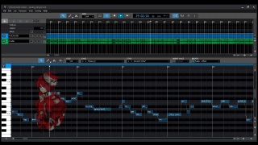

Featured
From the Start Cover
After the blooming popularity of “From the Start” by Laufey, Jacob wanted to explore the new possibilities of the song through the voice of a synthesizer. Using Vocaloid, a very popular voice synth software, he replicated the notes and lyrics with a new and unique style.
A self portrait

helped Jacob discover his love for drawing in pencil for a rugged and homemade look, just like him.